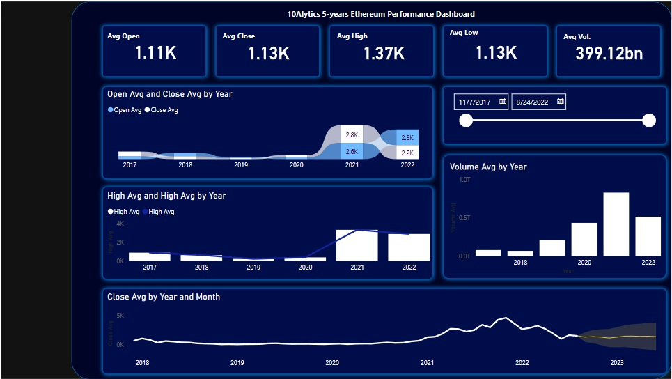
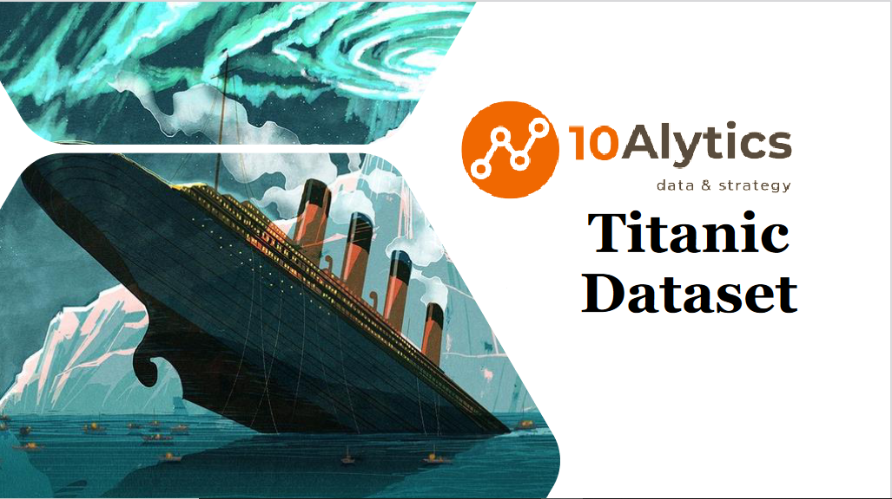
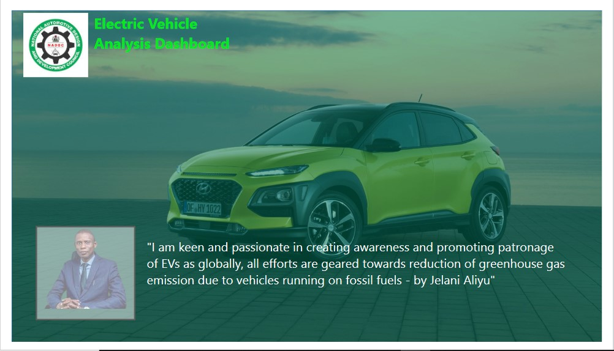

This analysis was done for the purpose of knowing the five years performance of Ethereum.
It is important to state that the dataset used for the analysis was from a website,
imported in tnto the Power BI.

The Nigeria Covid19 Data Exploration in Power Bi. The Dataset was gotten from the NCDC website and imported to the Power BI for the necessary analysis.
The Dataset was analyse between the different teams that paricipated at the world cup. The different goals scored for the diffrent years etc.
The Dataset was analysed by Performing descriptive analysis on a dataset containing information on 1000 donors to a Charity by using SQL to query the data for insights to help make data-driven fundraising decisions.

The Titanic Dataset, Exploratory Data Analysis was used to answer alot of questions partaining to how many Passengers were on the ship, total number of male, female etc

The Dataset was analysed for the sole purpose of knowing if Nigerians can really afford Electric Vehicles.

The HRM Dataset, Exploratory Data Analysis was used to answer alot of questions partaining the total number of staff, the state of Origin, Age etc etc